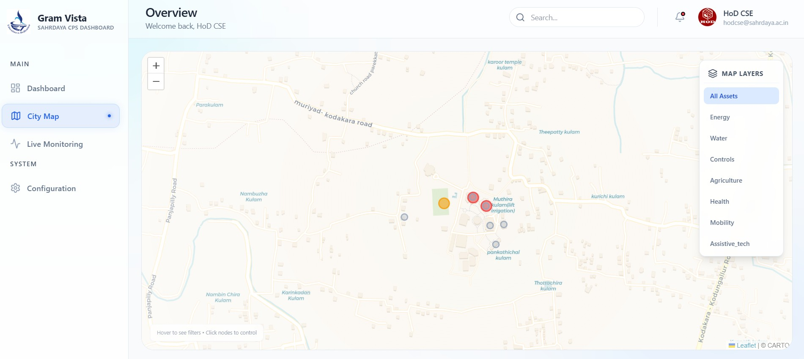
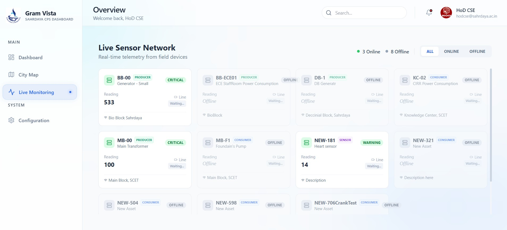
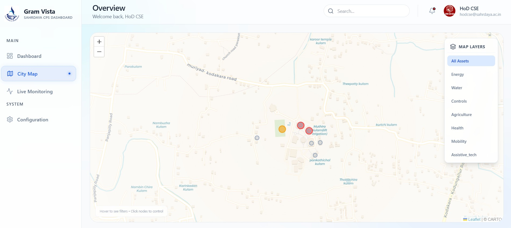
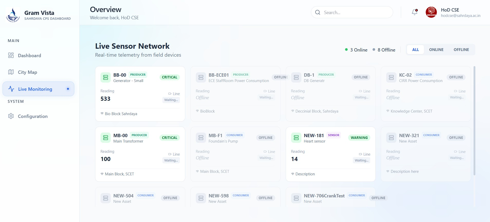

The Gram Vista CPS platform includes an integrated, role-based dashboard system
that provides real-time visibility, analytics, and control across village
infrastructure and services.
Water & Environment Dashboard
Real-time monitoring of water quality, soil moisture, temperature, and
environmental parameters with anomaly alerts and trend analytics.
Energy & Microgrid Dashboard
Visualization of power consumption, renewable generation, load prioritization,
and fault detection for village energy systems.
Agriculture & Livelihood Dashboard
Crop health indicators, irrigation status, sensor-driven advisories, and
predictive insights for sustainable farming.
Health & Safety Dashboard
Edge-enabled health monitoring, assistive alerts, and safety event tracking
supporting community well-being.
Governance & Decision Support
Digital twin–enabled dashboards for planners and administrators, supporting
evidence-based decision-making and policy alignment.
Control & Actuation Interface
Secure interfaces for controlling pumps, energy devices, and alerts,
enabling closed-loop CPS operation.


 


